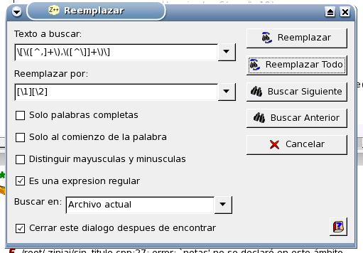

El primer error que podemos observar se encuentra en la línea 10. Aquí se especificaron las dos dimensiones de una matriz separandolas con comas ([N,M]) en lugar de colocar los corchetes correspondientes ([N][M]). Puede observar que este error se repite en todas las expresiones que incluyen un elemento de la matriz. Para ello, por ejemplo, presione Ctrl+G e introduzca el número de línea 42.
Gracias a la flexibilidad que aporta el uso de expresiones regulares al buscar y reemplazar, ZinjaI puede corregir todos estos errores en un solo paso. Para ello abra el cuadro de diálogo Reemplazar presionando Ctrl+R, en introduzca las cadenas "\[\([^,]+\),\([^\]]+\)\]" y "[\1][\2]" en los cuadros de texto "Texto a buscar" y "Reemplazar por" respectivamente (para evitar errores de tipeo seleccione las cadenas, sin incluir las comillas, y utilize copiar y pegar). Active la casilla "Es una expresión regular" y luego presione el botón Reemplazar Todo y observe como se corrigen todas las expresiones al mismo tiempo (por ejemplo, las de las líneas 32 y 65).

Para entender mejor el funcionamiento de estas expresiones consulte Expresiones Regulares.
Volver... Continuar...